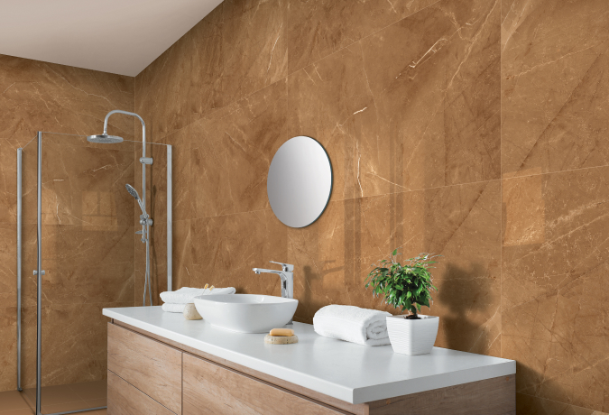

How to choose checkerboard floor tile colors
Laparet — a young, progressive, and stylish in the world of ceramic tiles, created and developed from a long partnership with reliable manufacturers in Italy, Spain, and India, whose high product quality has been proven over the ages.